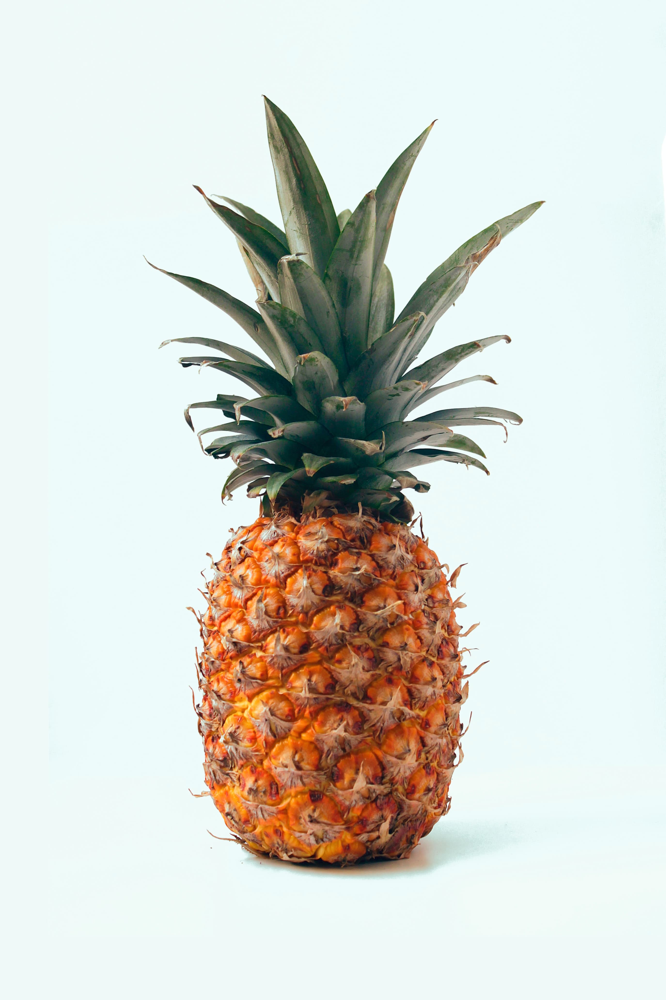
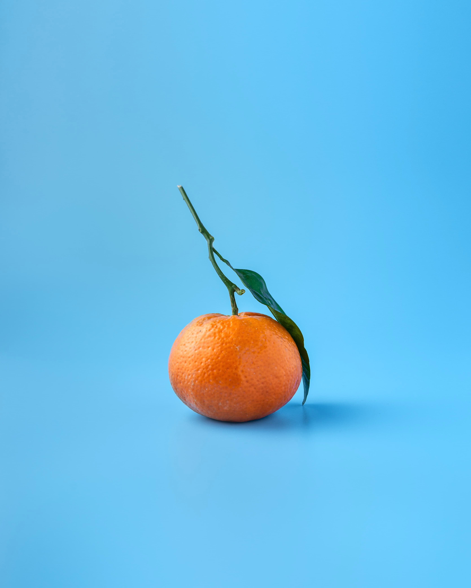

Feira dos produtores locais
Feira de vegetais orgânicos vendidos pelos produtores da zona rural da cidade. Comprando aqui, é da terra pra panela!
Outros eventos
-

Festa do morango
Venha conhecer a festa do morango! Além dos pratos tradicionais, como frango frito, polenta e macarronada, o visitante ainda tem acesso à praça de alimentação, com venda de pastel, lanches, tempurá e muito mais.
-

Festa do abacaxi
Venha conhecer a festa do abacaxi! Além dos pratos tradicionais, como frango frito, polenta e macarronada, o visitante ainda tem acesso à praça de alimentação, com venda de pastel, lanches, tempurá e muito mais.
-

Festa da tangerina
Venha conhecer a festa da tangerina! Além dos pratos tradicionais, como frango frito, polenta e macarronada, o visitante ainda tem acesso à praça de alimentação, com venda de pastel, lanches, tempurá e muito mais.